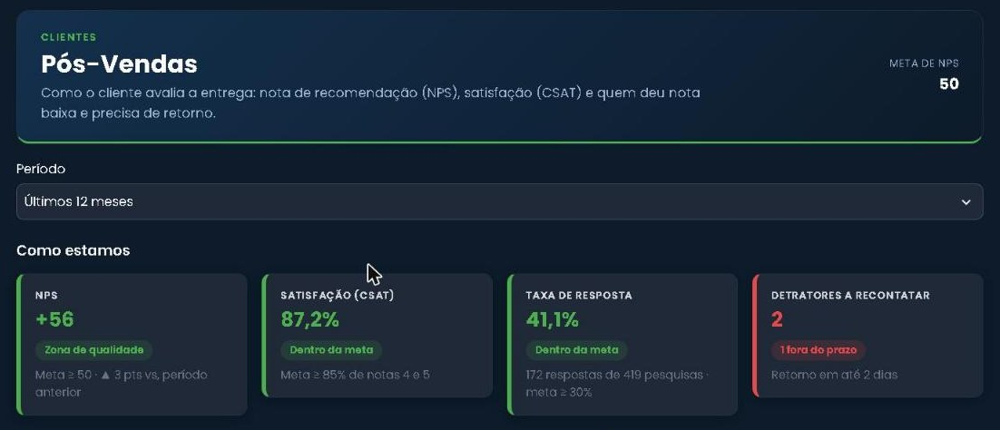
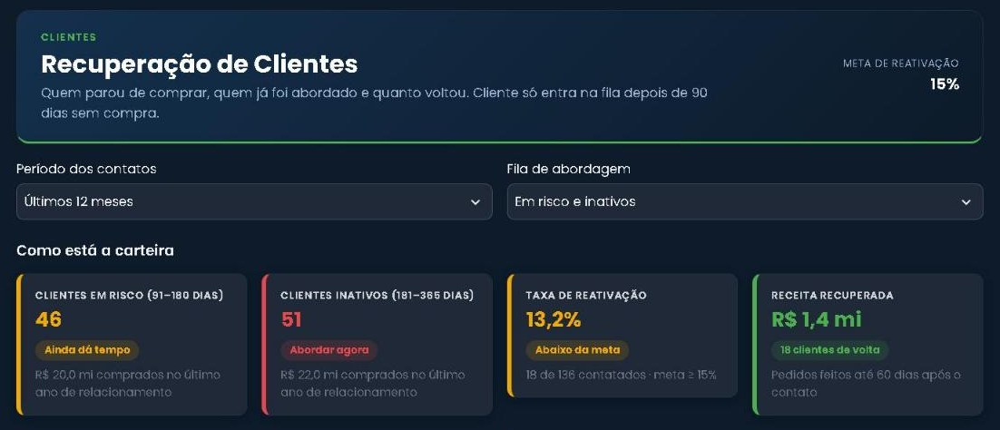

Ninguém sabe a quem ligar hoje
O contato depende da memória do vendedor ou de uma planilha que ninguém atualiza. Os clientes grandes e os pequenos recebem o mesmo (pouco) cuidado.
Uma fila de ação que mostra quem precisa de atenção e quando. Mais o pós-venda com nota, a recuperação de quem parou de comprar e o controle do prazo de entrega.

Muitas empresas investem para conquistar clientes novos e esquecem de cultivar quem já confia nelas. Sem um acompanhamento consistente, oportunidades passam despercebidas e o vínculo enfraquece.
O contato depende da memória do vendedor ou de uma planilha que ninguém atualiza. Os clientes grandes e os pequenos recebem o mesmo (pouco) cuidado.
Nota baixa na pesquisa, pedido atrasado e cliente que parou de comprar só são notados no fechamento do mês, quando já é difícil reverter.
Reativar clientes inativos sai da gaveta quando a venda cai. Sem regra clara de quem abordar, por qual canal e com que prioridade, o esforço se perde.
Cada módulo roda sozinho. As regras e metas abaixo são as da demonstração; num projeto elas são ajustadas à sua carteira.
Para cada cliente, o módulo mede há quantos dias ninguém conversa com ele e compara com um prazo que depende do porte econômico: quanto maior o cliente, mais apertada a cadência. Quem estoura o prazo cai numa fila de ação.
| Classe | Prazo sem contato | “Atenção” a partir de |
|---|---|---|
| A+ | 90 dias | 60 dias |
| A | 90 dias | 60 dias |
| B | 180 dias | 120 dias |
| C | 365 dias | 243 dias |
Cliente sem nenhuma interação registrada aparece como vencido.
Pesquisa de pós-venda com três números de mercado e uma fila de retorno para quem deu nota baixa.
A carteira é lida pela recência (há quantos dias o cliente não compra). A abordagem é lida pela taxa de reativação por canal.

O indicador padrão de logística, o OTD (on-time delivery): pedidos entregues até a data prometida divididos pelos pedidos cujo prazo já venceu.
| Atraso | Faixa |
|---|---|
| Até a data prometida | No prazo |
| 1 a 3 dias | Atraso leve |
| 4 a 7 dias | Atraso médio |
| 8 dias ou mais | Atraso grave |
Pedido ainda em aberto só entra na conta depois que a data prometida passa.
Dez clientes inventados, com as regras do módulo Relacionamento. Registre um contato e veja a fila se reorganizar. Depois avance os dias e veja o semáforo mudar.
Dados fictícios. Os clientes e os dias abaixo foram inventados para esta demonstração. A ordenação aqui é simplificada: quanto do prazo já passou, ponderado pelo porte do cliente.
Digite as notas de 0 a 10 que os clientes deram, separadas por vírgula, espaço ou linha. O resultado aparece na hora, com a zona em que o NPS fica.
NPS = % de promotores − % de detratores. Vai de −100 a +100. A meta de referência da demonstração é 50.
A ferramenta troca “de quem eu me lembro” por “quem a regra mostra”.
A equipe vê quem passou do prazo e quem está perto de passar, em ordem de prioridade.
Cada cliente aparece com o histórico e o canal de contato. A abordagem é feita por quem conhece a conta.
O contato fica anotado. O cliente sai da fila e o prazo dele recomeça a contar.
Saúde da carteira, NPS, reativação e OTD mostram se o esforço está funcionando.
Os números da demonstração são ponto de partida. Num projeto, tudo o que define a regra é conversado com quem vive a carteira.
Não precisa. Os módulos funcionam ao lado do sistema que você já usa: leem pedidos e clientes e devolvem a fila de ação, os indicadores e o histórico dos contatos.
Não. A equipe registra os contatos que faz, e os dados de compra vêm do seu sistema. No pós-venda, só entra a resposta da pesquisa que o cliente decidir responder.
Sim. Os valores mostrados são só ponto de partida. Prazo por classe, faixas de recência e metas são combinados com você.
Dá. Cada um roda sozinho e já entrega valor. Muita gente começa pelo que mais dói, por exemplo a recuperação de clientes inativos, e depois adiciona os outros.
Os módulos trabalham com dados de contato e de compra de clientes, então há controle de acesso por perfil e registro de quem alterou o quê. Os detalhes de tratamento são definidos em conjunto com você.
Conte como é o acompanhamento hoje. Respondemos com a fila de ação e os indicadores que fariam sentido.